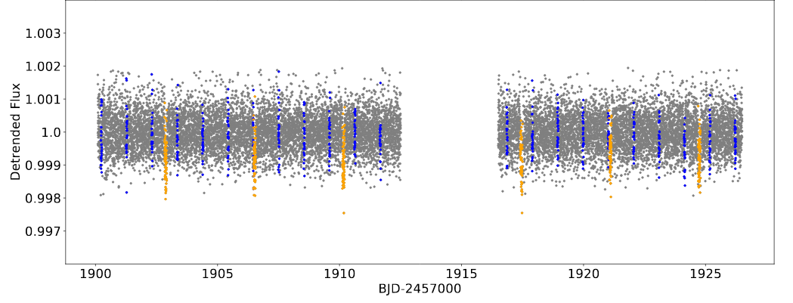
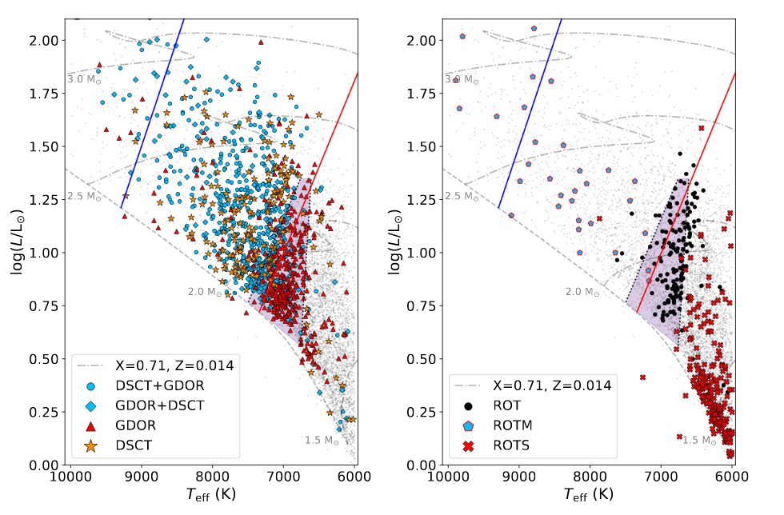
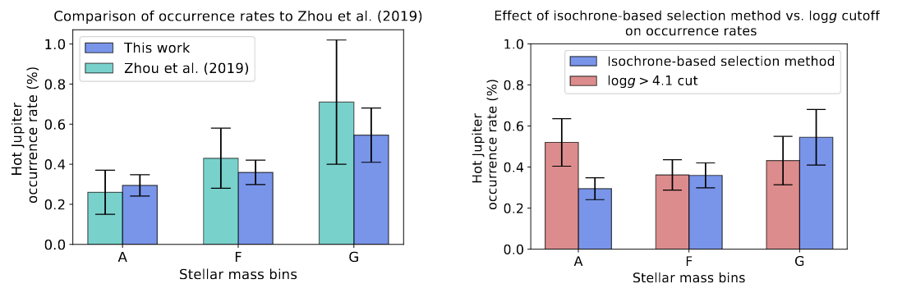

Welcome TESS followers to our latest news bulletin! This week, we are looking at three recent papers from the archive. Enjoy!
The HD 93963 A transiting system: A 1.04d super-Earth and a 3.65 d sub-Neptune discovered by TESS and CHEOPS (Serrano et al., 2022) :
HD 93963 A is a bright nearby G0V star, a member of a visual binary system, and host to TESS Object of Interest, TOI-1797.01. TOI-1797.01 is a sub-Neptune with an orbital period of 3.65 days, first reported in 2021. This paper presents the discovery of another planet in the system, interior to TOI-1797.01. Serrano et al. (2022) use data from TESS, CHEOPS, ground-based photometry and adaptive-optics imaging, and spectroscopy from TRES, FIES and SOPHIE to detect, validate and characterize a super-Earth with an orbital period of 1.04 days. The planet has a radius of 1.35 REarth, predicted mass of 2.4 MEarth, and equilibrium temperature of 2042 K (assuming zero albedo). The two planets fall on the opposite sides of the photo-evaporation radius valley and the authors suggest that they may have experienced drastically different evolutionary paths. The presented results provide important new information for the HD 93963A systems and demonstrate the power of combining observations from multiple instruments and facilities.
Periodic variable A-F spectral type stars in the northern TESS continuous viewing zone (Skarka et al., 2022) :
The photometric variability of A-F stars is an important diagnostic for probing the transition between fast and slow rotators, and radiative and convective energy transfer, as well as p- and g-mode pulsations. Prominent examples are stars of the gamma Doradus and delta Scuti types (including hybrid pulsators), SX Phe stars, and more. This paper presents a detailed investigation of A-F stars observed in the TESS northern ecliptic pole, including visual classification of the type of variability. Skarka et al. (2022) inspected 5923 stars brighter than T = 11 mag, identified 3025 of these as variable, and classified 1813 of them following the VSX scheme and using the light curve shape and corresponding Fourier transform. The authors found that the gamma Doradus, the delta Scuti variables, and the hybrid pulsators to be the most numerous, which is in accordance with previous studies. Of the stars classified as eclipsing binaries, the authors noted that only 56% of the identified targets are listed in the TESS eclipsing binary catalog, although this is likely due to the fact that the latter is exclusively based on the short-cadence. The authors identified a new subclass of relatively cool variable stars exhibiting periodic modulations and harmonics of the basic Fourier frequency and argued that these targets are unlikely to be explained by co-rotating structures governed by high-order magnetic multipoles. Skarka et al. (2022) note that they will perform similar analysis using data from the southern continuous viewing zone of TESS.
Exploring the Dependence of Hot Jupiter Occurrence Rates on Stellar Mass with TESS (Beleznay & Kunimoto 2022) :
Hot Jupiters are giant, short-period planets that provide important information for the processes responsible for planet formation and evolution. Despite being the predominant class of planets found in the early stages of exoplanet discovery, they are, in fact, relatively rare. Their typical occurrence rate is about 1% around Sun-like stars, with a slight tension between RV surveys and Kepler data as the former prefers a value of ~0.8-1.2% vs. ~0.4-0.6% for the latter. Several explanations have been invoked to explain this discrepancy, one of which involves a dependence on the stellar mass. This paper presents improved estimates for the occurrence rate of hot Jupiters around AFG stars observed by TESS. Beleznay & Kunimoto (2022) independently detect and vet 97 planets and planet candidates using 26 sectors of data. The authors estimate a false positive rate of 14%, 16% and 0% for A, F, and G stars, respectively. They calculate a weighted average occurrence rate of hot Jupiters around AFG stars of 0.33+/-0.04% -- in agreement with results based on Kepler data -- with star-type-specific rates of 0.29+/-0.05% for A stars, 0.36+/-0.06% for F stars, and 0.55+/-0.14% for G stars. Taking into account stellar binarity amongst their sample of G stars, the authors calculate single-star hot Jupiter occurrence rates of 0.98+/-0.36%, in line with the results from RV surveys. Beleznay & Kunimoto (2022) argue that correcting for stellar multiplicity can fully account for the discrepancy in the calculated occurrence rates of hot Jupiters between RV and transit surveys.

Fig. 1: Taken from Serrano et. al. (2022). Detrended PDC-SAP TESS photometry of HD 93963. The transits of the 1.04 day and 3.65 day planet candidates are highlighted in blue and yellow, respectively.

Fig. 2: Taken from Skarka al. (2022). Left panel: Hertzsprung-Russel diagram for the pulsating stars presented in this study. The different lines indicate the ZAMS (dashed), evolutionary tracks (dot-dashed), empirical boundaries of the instability strip (solid blue and red). The shaded area indicates the gamma Doradus instability region. Right panel: same as the left panel but for the rotationally-modulated stars. The legend indicates delta Scuti (DSCT) and gamma Doradus (GDOR) stars.

Fig. 3: Taken from Beleznay & Kunimoto (2022). Left panel: Comparison between the Jupiter occurrence rates for AFG stars calculated from this work and by Zhou et al. (2019). Right panel: Comparison between the hot Jupiter occurrence rates for AFG stars using the authors' default isochrone-based selection method and using a log(g) cut.